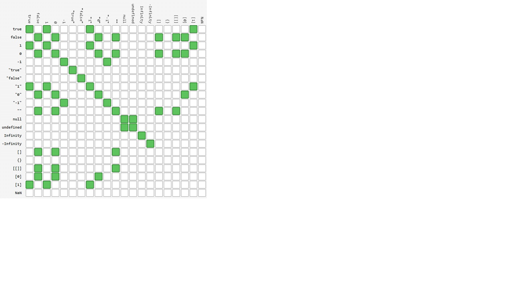

Javascript (JS)
¨
JavaScript a Java jsou zcela odlišné jazyky, a to jak v koncepci, tak v designu.
JavaScript vynalezl Brendan Eich v roce 1995 a v roce 1997 se stal standardem ECMA.
ECMA-262 je oficiální název normy. ECMAScript je oficiální název jazyka.
Komentáře
// komentář na jeden řádek
/* komentář na více řádků */
Jak přidat JS
Inline JS
Píšem přímo do body Elementu.
<script> JS kód </script>
Výstupy v JS
|
Popis |
innerHTML |
Zápis do HTML Elementu |
document.write() |
Zápis do HTML výstupu |
window.alert() |
Zápis do výstražného pole |
console.log() |
Zápis do konzoly prohlížeče |
window.print() |
Vytiskne aktuální stránku |
Proměnné, Konstanta
JS je dynamicky typovaný jazyk (dynamicky mění typy proměnných podle jejich obsahu).
Deklarace (vytváření) proměnných
Znak rovná se (=) je operátorem „přiřazení“, nikoli operátorem „rovná
se“.
Proměnná
let nazevPromenne;
let nazevPromenne = hodnota;
var nazevPromenne = hodnota; /*stará verze*/
globální proměnná
nazevPromenne;
nazevPromenne = hodnota;
Konstanta - nelze měnit hodnotu.
const nazevKonstanty = hodnota;
Pravidla pro nazevPromenne.
- Musí mít jedinečný název.
- Musí začínat písmenem (a-z nebo A-Z), znak dolaru ($) a
znak potržítka (_).
- Nesmí začítnat číslovkou (0, 1, 2, 3, ....).
- Nelze použít rezervovaná slova JS.
- Rozlišuje se velká a malá písmena.
Datové typy
| Hodnota |
Popis |
Proměnná bez hodnoty (let nazevPromenne;). |
Undefined |
| null; |
Null - objekt |
| "text"; 'text'; |
String = Textový řetězec |
| 15; 3.14; |
Number (Int = Celé číslo + Double, Float = Desetiné číslo) |
| ["martin", "Pavel", "Ríša"]; |
Pole |
| {Jméno:"Martin", Příjmení:"Starý", Věk:32, povolání:"Eletrikář"}; |
Objekt |
|
Boolen (true, false) – pravda/nepravda |
Datum a čas
let nazevPromenne = new Date(); // vytvoří objekt, ve které je aktuální datum
nazevPromenne.getDate(); // číslo dne v měsíci
nazevPromenne.getFullYear(); // rok jako 4 čísla
nazevPromenne.getHours(); //hodiny
nazevPromenne.getMinutes(); //minuty
nazevPromenne.getSeconds(); //sekundy
nazevPromenne.getTime(); //počet milisekund od 1.1.1970 (UNIX TimeStamp)
Textové řetězce – string
Speciální znaky
| Speciální znak |
Popis |
| \b |
Backspace |
| \f |
Přeskočení na další "stánku" |
| \n |
Nový řádek |
| \r |
Carriage return (někdy jako součást odřádkování) |
| \t |
Horizontální tabulátor |
| \v |
Vertikální tabulátor |
| \\ |
Zpětné lomítko |
| \' |
Jednoduchá uvozovka (escape sekvence) |
| \" |
Dvojitá uvozovka (escape sekvence) |
| \0 |
Nulový znak (také používaný pro ukončení řetězce) |
Apostrofy
document.write('Jmenuji se $jmeno \n S tímto "jménem" jsem spokojen.');
//"Jmenuji se $jmeno S tímto "jménem" jsem spokojen. "
echo('<a href="#">Odkaz</a>');
//Apostrofy se hodí na HTML Elementy - Odkaz
Uvozovky
document.write("Jmenuji se $jmeno \n S tímto \"jménem\" jsem spokojen.");
//"Jmenuji se $jmeno S tímto "jménem" jsem spokojen."
Zápis řetězce s proměnnou
let jmeno = "Karel";
document.write("Jmenuji se ", jmeno, "\n S tímto \"jménem\" jsem spokojen.");
//"Jmenuji se Karel S tímto "jménem" jsem spokojen."
Fungce (method)
let text = "PikaHeim";
document.write(text[0]);
//Vypíše první znak v textovém řetězci "P"
let text = "PikaHeim";
document.write(text.length);
//Vypíše počet znaků řetězce "8"
let text = " PikaHeim ";
document.write(text.trim());
//Odstraní bílé znaky před i za řetězcem "PikaHeim"
let text = "jmenuji se PikaHeim";
document.write(text.replace("Karel", "Martin"));
//Nahradí "PikaHeim" za "Martin" - "jmenuji se Martin"
let text = "PikaHeim";
document.write(text.toUpperCase());
//Změní všechny znaky v text. řetězci na velká "PIKAHEIM"
let text = "PIKAHEIM";
document.write(text.toLowerCase());
//Změní všechny znaky v text. řetězci na malá "pikaheim"
let text0 = "Pika";
let text1 = "Heim";
let text2 = "Web";
let spojene = text0 + text1 + text2;
let spojene = text0.concat(text1,text2);
document.write(spojene);
//Spojuje textové řetězce "PikaHeimWeb"
let text = "PikaHeim";
document.write(text.substr(2,4));
//Vypíše 4 znaky od 2 znaku "kaHe"
let text = "PikaHeim";
document.write(text.substring(2,4));
//Vypíše od 2 znaku do 4 znaku "ka"
let text0 = "Pika-Heim";
let text1 = text0.split("-");
document.write(text1);
//Rozdělí tex. řetězec na pole podle určitého znaku "Pika,Heim"
let text0 = "PikaHeim";
let text1 = text0.indexOf("k");
document.write(text1);
//Vratí první index "2"
let text2 = text0.lastIndexOf("i");
document.write(text2);
//vrací poslední nalezený index "6"
let text3 = text0.search("e");
document.write(text3);
//Vrací index hledaného řetězce nebo REGEX výrazu (o těch se dozvíme dále) "5"
????
let text0 = "PikaHeim";
let text1 = Text0.match(/i/g);
document.write(text1);
Čísla – number
Všechna čísla jsou v JavaScriptu ukládána jako 64 bitové a jsou počítána s přesností na 15 čísel.
let x = 10;
let x = 10e5; // 10**5 = 1 000 000 vědecká (exponenciální) notace
Fungce (method)
let cislo = 1.23456789;
let text = "text";
//isNaN zjištuje jestli se jedná o číslo
promnenna = isNaN(cislo);
//false
promnenna = isNaN(text);
//true
promnenna = cislo.toPrecision(4);
// Ořízne číslo na danou přesnost - "1.235" poslední číslo zaokruhluje
promnenna = cislo.toString();
// Převede číslo (number) na textový řetězec (string)
promnenna = parseInt(text);
// Převede textový řetězec (string) na číslo (number)"NaN"
promnenna = cislo.toExponential(2);
// Převede číslo na exponenciální (vědeckou) notaci "1.23e+0"
promnenna = Number.MIN_VALUE;
// nejmenší možné číslo v JS "5e-324"
promnenna = Number.MAX_VALUE;
// největší možné číslo v JS "1.7976931348623157e+308"
Knihovna Math
let cislo = Math.PI;
// Číslo PI "3.141592653589793"
let cislo = Math.E;
// Eulerovo číslo "2.718281828459045"
let cislo = Math.LN10;
// Logaritmus 10 "2.302585092994046"
let cislo = Math.SQRT2;
// Druhá odmocnina
let cislo = Math.max(1,10);
// Vrátí větší číslo. Opakem je funkce min()
Math.pow(4,3)
// 4 na třetí == 64
Math.sqrt(9)
// 2 odmocnina čísla
Math.random()
// Náhodné číslo 0 – 1
Math.abs(x)
// Absolutní hodnota čísla
Math.round(x)
// Zaokrouhlení podle obvyklých pravidel
Math.ceil(x)
// Zaokrouhlení nahoru
Math.floor(x)
// Zaokrouhlení dolů
Math.cos(x)
// Cosinus
Math.sin(x)
// Sinus
Math.log(x)
// přirozený logaritmus (základem je Eulerovo číslo)
Podmínky
| Operátor |
C-like Zápis |
== |
Rovnost hodnotou |
=== |
Rovnost hodnotou i typem |
> |
Je ostře větší |
< |
Je ostře menší |
>= |
Je větší nebo rovno |
<= |
Je menší nebo rovno |
!= |
Nerovnost hodnotou |
!== |
Nerovnost hodnotou i typem |
! |
Obecná negace |
Skládaní podmínek
| Operátor |
C-like Zápis |
&& |
A zároveň |
|| |
Nebo |
Přetypovaní podmínek

if (Logický výraz)
kód který se vykoná když je pravda;
if ((log.výraz) && (log.výraz))
kód který se vykoná když je pravda;
else
kód který se vykoná když je nepravda;
if ((log.výraz) && (log.výraz))
kód který se vykoná když je pravda;
else if ((log.výraz) && (log.výraz)) //kód který se vykoná když je nepravda;
kód který se vykoná když je pravda;
else
kód který se vykoná když je nepravda;
boolean - true(pravda), false(nepravda)
let vek = 26;
let zletily = (vek >= 18); //do proměnné se uloží true
document.write(zletily);
if (zletily) //true
document.write("ano"); //true
Ternární operátor
let muz = true; // nějaká proměnná udávající pohlaví
let nazevPohlavi = (muz) ? 'muž' : 'žena';
//(Logixký výraz) ? true : false;
document.write(nazevPohlavi); //"muž"
switch – moc se nepoužívá
let hodnota = 2;
let slovy;
switch (hodnota) {
case 1:
slovy = "jedna";
break;
case 2:
slovy = "dva";
break;
case 3:
slovy = "tři";
break;
default:
slovy = "nevím";
}
document.write(slovy); //dva
propadávání
let mesic = 11;
switch (mesic) {
case 1:
case 2:
case 3:
document.write('Je první čtvrtletí.');
break;
case 4:
case 5:
case 6:
document.write('Je druhé čtvrtletí.');
break;
case 7:
case 8:
case 9:
document.write('Je třetí čtvrtletí.');
break;
case 10:
case 11: //zde se splní podmínka
case 12:
document.write('Je čtvrté čtvrtletí.'); // "Je čtvrté čtvrtletí."
break;
}
Cykly
ukončení aktuálního cyklu:
return; //viz návratová funkce
break; //stará verze
continue; //ukončení pouze aktuální iterace (průběhu) cyklu a ne celého cyklu.
for cyklus
for (let i = 0; i < 3; i++) { //proměná; podmínka; příkaz (++ nebo --)
document.write("Knock<br />"); //3x"Knock"
}
while cyklus – true(pravda), false(nepravda)
let i = 1; //proměná
while (i <= 10) { //podmínka
i++; //příkaz
document.write("Knock<br />"); //10x "knock"
}
do...while – vždy se vykoná aspoň jednou
let a, b, c; // proměnné
do {
a = Math.floor(Math.random() * 10) + 1; //knihovna Math
b = Math.floor(Math.random() * 10) + 1;
c = Math.floor(Math.random() * 10) + 1;
} while (a + b <= c || a + c <= b || b + c <= a); //podmínka až za kódem
document.write(`Trojúhelník: a = ${a} cm, b = ${b} cm, c = ${c} cm.`);
//`Tupý výraz` ${proměnná}
Pole
Číselně indexované pole
| Idex: |
0 |
1 |
2 |
3 |
4 |
5 |
6 |
7 |
8 |
| Prvek: |
Ahoj |
45 |
1.25 |
Mongol |
48 |
455 |
66 |
martínek |
lol |
Vytvoření pole:
let promnenna = new Array();
// nebo
let promnenna = [];
Naplnění pole:
promnenna[0] = "Ahoj"; // "Ahoj"
Naplnění pole pomocí ciklu:
for (let i = 0; i < 10; i++) {
promnenna[i] = i + 1;
}
document.write(promnenna); // "1,2,3,4,5,6,7,8,9,10"
výpis pole pomocí ciklu:
for (let i = 0; i < promnenna.length; i++) {
document.write(promnenna[i] + " ");
}
for...of – zjednodušení výraz
for (let promnenna2 of promnenna) {
document.write(promnenna2);
} // "12345678910"
Výpis indexů polí:
for (let promnenna2 in promnenna) {
document.write(promnenna2);
} // "0123456789" čísla indexu
Fungce (method) polí:
| Methoda |
Popis |
Výsledek |
promnenna.push("lol"); |
přidá nový prvek na konec pole |
|
promnenna.unshift("Ahoj"); |
přidá nový prvek na začátek pole |
|
promnenna.splice(2, 3); |
smaže 3 prvky od 3. prvku dále |
|
promnenna.sort(); |
seřadí "textové řetězce" podle abecedy |
|
promnenna.reverse(); |
otočí pole tak, aby byly prvky pozpátku |
|
promnenna.length |
délka pole |
|
|
|
|
|
|
|
Function (Funkce)
Funkce Jedná se o blok kódu, který jednou napíšeme a potom ho můžeme libovolně volat bez toho,
abychom ho psali znovu a opakovali se.
function nazevFungce() {
document.write("Ahoj, vřele tě tu vítám!");
}
nazevFungce(); // zavolání funkce
Funkce s parametry:
Funkce může mít také libovolný počet vstupních parametrů, které píšeme do závorky v její definici a podle nich
ovlivňujeme její chování.
Pokud nemá parametr nějakou hodnotu tak je: undefined
function nazevFungce(nazevParametru) {
document.write("Ahoj " + nazevParametru + "!");
}
nazevFungce("Karle"); // Ahoj Karle!(nazevParametru = "Karle")
nazevFungce("Davide"); // Ahoj Davide! (nazevParametru = "Davide")
nazevFungce("Mařenko"); // Ahoj Mařenko! (nazevParametru = "Mařenko")
Návratová hodnota funkce:
Funkce může dále vracet nějakou hodnotu. V našem případě bychom nemuseli do dokumentu rovnou zapisovat
(například proto, že budeme chtít s textem ještě dále pracovat a ne ho rovnou vypsat). Slouží k tomu
příkaz return
function nazevFungce(nazevParametru) {
return "Ahoj, vřele tě tu vítám " + nazevParametru + "!";
}
let promnenna = nazevFungce("Karle"); // (nazevParametru = "Karle")
document.write(promnenna); // Ahoj, vřele tě tu vítám Karle!
Třídy (Class)
Třídy JavaScript jsou šablony pro objekty JavaScript.
Syntax
class Car {
constructor(name, year) {
this.name = name;
this.year = year;
}
}
OOP